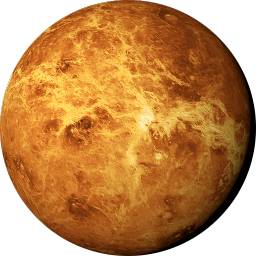
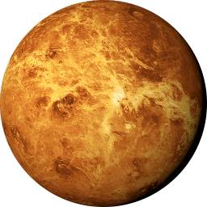

Project Voyager
Objective
The objective of this game is to travel throughout the solar system and aquire the 6 parts to your ship. Once you've done this, you've won the game. Parts can be found as drops from monsters and as rewards for completing puzzles.
Movement
The arrow keys are used to move around the game. You can also use the on-screen arrows as well.
To traverse into different rooms and planets you bring your character over one of the following icons:
 


Puzzles
Puzzles are marked by a icon on the map. You may choose to not solve a riddle but you will not recieve a reward. There is also a HINT marker at the bottom left.
Shop
Shops are identified by the icon on the map. You may sell and buy all items that are not pertaining to quests. Items sell for 50% of the buy value.
Combat
A battle is marked by a on the map. You may run from battles. Damage is equal to the current strength of the player. Accuracy is calculated randomly and you will have a chance to miss.